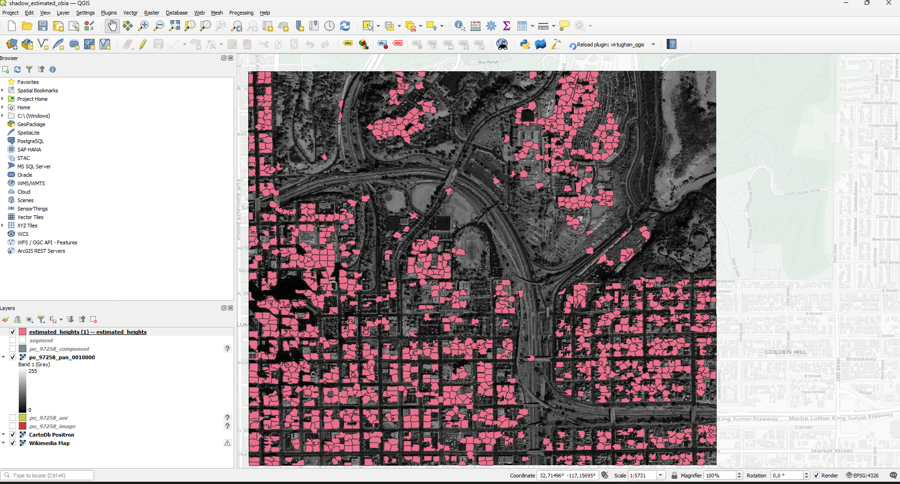

Course: Application Development for Earth Observation
Building height estimation from cast shadows, combining OBIA segmentation with sun-angle geometry to derive per-building heights from a single very-high-resolution optical scene.
